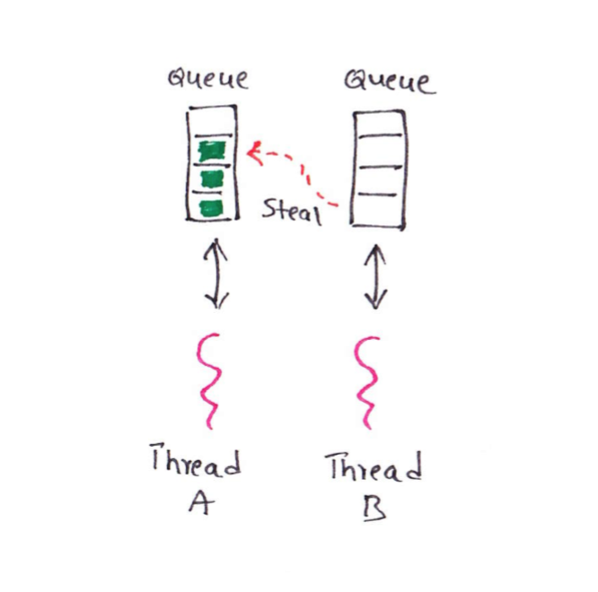

ForkJoinPool
ForkJoinPool
參考資料：
-
Simple Introduction to ForkJoin Framework https://thetechstack.net/simple-introduction-to-forkjoin-framework-part1/
-
Chat GPT
Divide And Conquer (分而治之)
分治法是一種問題解決方法，將一個大問題劃分為若干個小問題，遞歸地解決小問題，然後將小問題的解合併起來得到大問題的解。在ForkJoinPool中，我們可以將一個大的任務劃分為多個子任務，每個子任務負責處理一部分數據，然後將子任務的結果合併起來得到最終的結果。這種分治的策略可以提高並行計算的效率，特別是對於大規模的問題。

Work Stealing
工作窺取是ForkJoinPool中的一種調度策略。當一個線程完成了它自己的任務後，它可以從其他線程的工作隊列中窺取任務並執行。這樣做的好處是可以實現負載均衡，確保所有線程都能夠保持忙碌狀態，充分利用系統資源。如果一個線程的工作隊列為空，它可以從其他線程的工作隊列中窺取任務，從而避免了線程閒置的情況。 
費氏數列
由來：
歐洲數學家 Fibonacci 在 1202 年發表的《Liber abacci》中曾經提過一個「免子算術」：「若有兔子每個月生一隻小兔子，一個月小兔子也投入生產，那麼一開始是一隻兔子，一個月後就有兩隻兔子，二個月後有三隻兔子，三個月後有五隻兔子…」
公式：
F₀ = 0 F₁ = 1 Fₙ = Fₙ₋₁ + Fₙ₋₂
例如：
1、1、2、3、5、8、13、21、34、55、89 ...
Java代碼：
public class FibonacciDemo extends RecursiveTask<Integer> {
int n;
FibonacciDemo(int n) {
this.n = n;
}
@Override
protected Integer compute() {
if (n <= 1) {
return n;
} else {
FibonacciDemo task1 = new FibonacciDemo(n - 1);
FibonacciDemo task2 = new FibonacciDemo(n - 2);
task1.fork();
return task2.compute() + task1.join();
}
}
public static void main(String[] args) {
int n = 7;
ForkJoinPool forkJoinPool = ForkJoinPool.commonPool();
FibonacciDemo task = new FibonacciDemo(n);
int result = forkJoinPool.invoke(task);
System.out.println("The Fibonacci number at index " + n + " is: " + result);
}
}
---
The Fibonacci number at index 7 is: 13
比較 ForkJoinPool 與 未使用 ForkJoinPool 的 效能差異
情境
請設計 從 1 加到 1_000_000_000 的程序，一個使用 Stream、一個使用 ForkJoinPool，計算並比較兩種方式的執行時間？
實作
SumDemo.java
import java.util.concurrent.ForkJoinPool;
import java.util.stream.IntStream;
public class SumDemo {
private static final int RANGE = 1_000_000_000;
public static void main(String[] args) {
long startTime;
long elapsedTime;
// Without ForkJoinPool
startTime = System.currentTimeMillis();
int sumWithoutForkJoin = IntStream.rangeClosed(1, RANGE).sum();
elapsedTime = System.currentTimeMillis() - startTime;
System.out.println("Sum without ForkJoinPool: " + sumWithoutForkJoin);
System.out.println("Time taken without ForkJoinPool: " + elapsedTime + " milliseconds");
// With ForkJoinPool
startTime = System.currentTimeMillis();
ForkJoinPool forkJoinPool = ForkJoinPool.commonPool();
int sumWithForkJoin = (int) forkJoinPool.invoke(new SumTask(1, RANGE));
elapsedTime = System.currentTimeMillis() - startTime;
System.out.println("Sum with ForkJoinPool: " + sumWithForkJoin);
System.out.println("Time taken with ForkJoinPool: " + elapsedTime + " milliseconds");
}
}
---
Sum without ForkJoinPool: -243309312
Time taken without ForkJoinPool: 271 milliseconds
Sum with ForkJoinPool: -243309312
Time taken with ForkJoinPool: 51 milliseconds
SumTask.java
import java.util.concurrent.RecursiveTask;
import java.util.stream.IntStream;
public class SumTask extends RecursiveTask<Integer> {
private static final long serialVersionUID = 1L;
private static final int THRESHOLD = 1_000_000;
private int start;
private int end;
public SumTask(int start, int end) {
this.start = start;
this.end = end;
}
@Override
protected Integer compute() {
if (end - start <= THRESHOLD) {
return IntStream.rangeClosed(start, end).sum();
} else {
int mid = (start + end) / 2;
SumTask leftTask = new SumTask(start, mid);
SumTask rightTask = new SumTask(mid + 1, end);
rightTask.fork();
leftTask.fork();
int rightSum = rightTask.join();
int leftSum = leftTask.join();
return leftSum + rightSum;
}
}
}
小結
通過分治法和工作窺取的策略，ForkJoinPool能夠實現高效的並行計算。它能夠自動地將任務劃分為更小的子任務，並將這些子任務分配給可用的線程執行。同時，工作窺取策略能夠確保所有線程都能夠保持忙碌，避免了線程閒置的情況，提高了系統的吞吐量和響應性能。
確實，從範例中，可以看到 使用 ForkJoinPool 可以比使用 Stream 快速5倍的時間，尤其 Stream 已經是以效能出名。顯見，使用多執行緒，分而治之的概念，會優於 Stream 的方式。